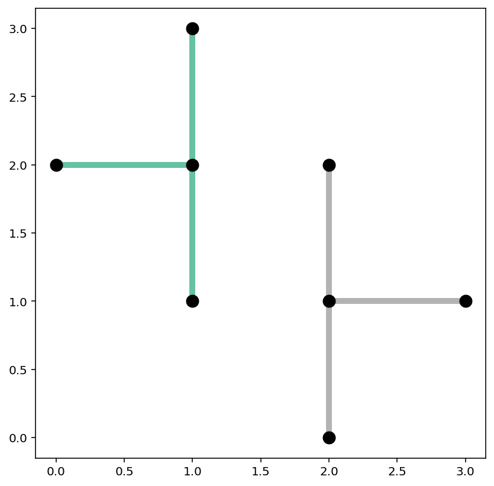
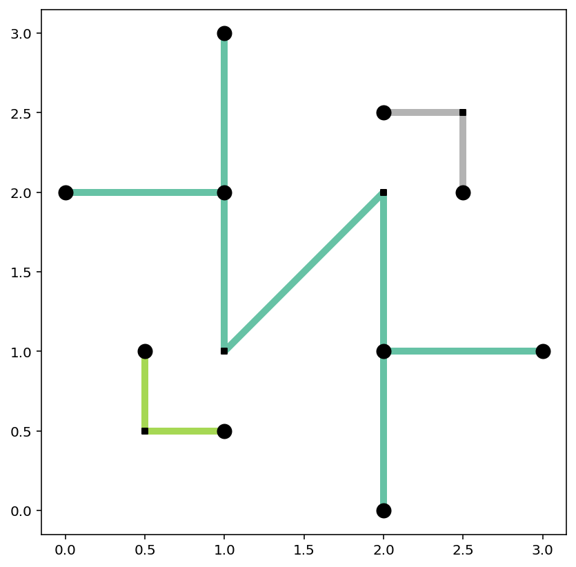
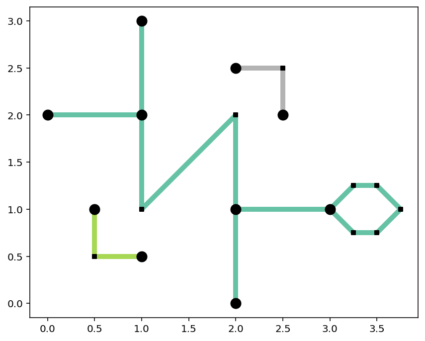
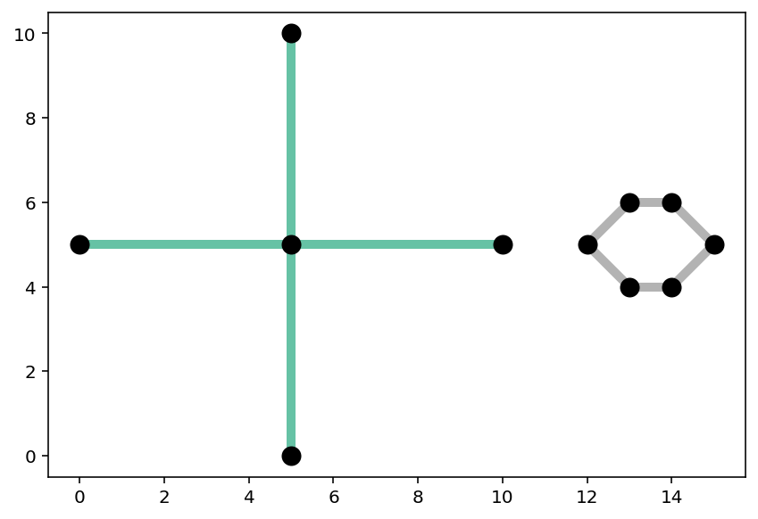
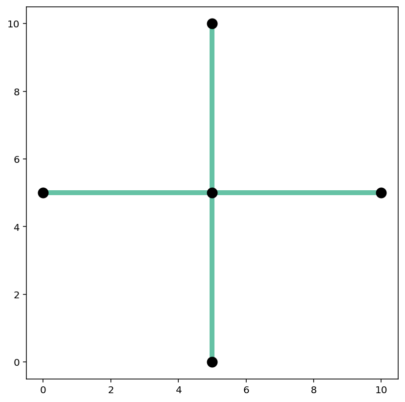
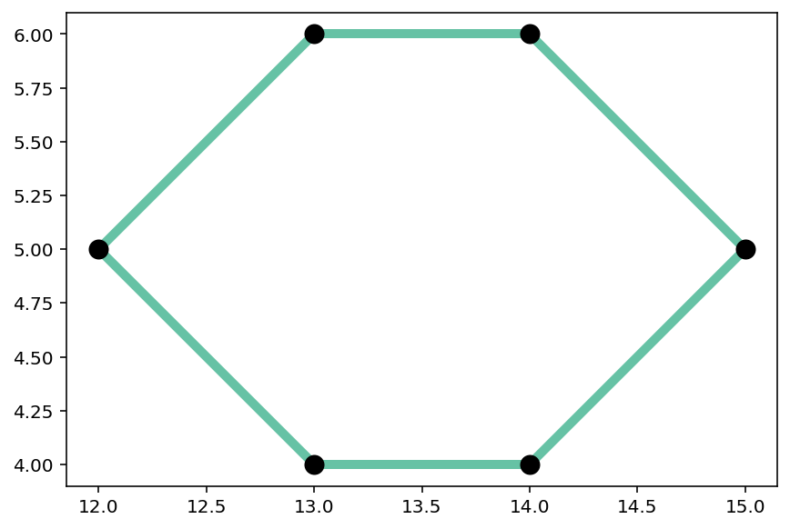
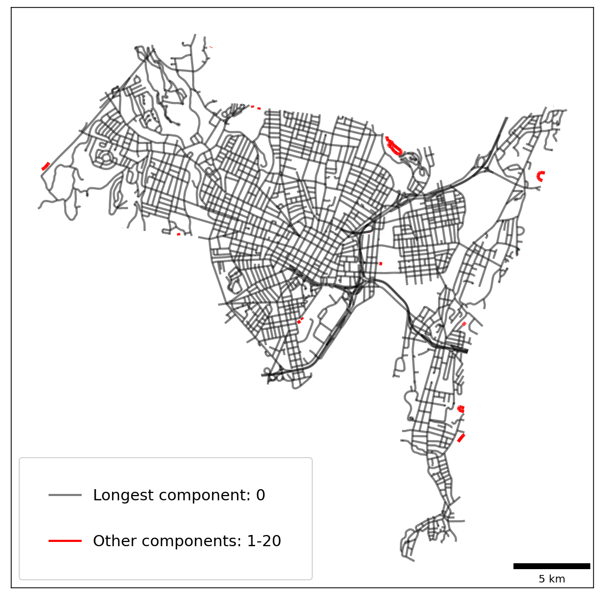

This page was generated from notebooks/connected-components.ipynb.
Interactive online version:

If any part of this notebook is used in your research, please cite with the reference found in README.md.
Connected components in a spatial network¶
Identifying and visualizing the parts of a network¶
Author: James D. Gaboardi jgaboardi@gmail.com
This notebook is a walk-through for:
Instantiating a simple network with
libpysal.cg.ChainobjectsWorking with the network components and isolated rings
Visualizing the components and (non)articulation vertices
Longest vs. Largest components
Extracting network components
[1]:
%config InlineBackend.figure_format = "retina"
[2]:
%load_ext watermark
%watermark
Last updated: 2022-11-01T23:06:05.661111-04:00
Python implementation: CPython
Python version : 3.10.6
IPython version : 8.6.0
Compiler : Clang 13.0.1
OS : Darwin
Release : 22.1.0
Machine : x86_64
Processor : i386
CPU cores : 8
Architecture: 64bit
[3]:
import geopandas
import libpysal
from libpysal import examples
from libpysal.cg import Point, Chain
import matplotlib
import matplotlib_scalebar
from matplotlib_scalebar.scalebar import ScaleBar
import spaghetti
%matplotlib inline
%watermark -w
%watermark -iv
Watermark: 2.3.1
libpysal : 4.6.2
matplotlib_scalebar: 0.8.0
geopandas : 0.12.1
json : 2.0.9
spaghetti : 1.6.8
matplotlib : 3.6.1
/Users/the-gaboardi/miniconda3/envs/py310_spgh_dev/lib/python3.10/site-packages/spaghetti/network.py:39: FutureWarning: The next major release of pysal/spaghetti (2.0.0) will drop support for all ``libpysal.cg`` geometries. This change is a first step in refactoring ``spaghetti`` that is expected to result in dramatically reduced runtimes for network instantiation and operations. Users currently requiring network and point pattern input as ``libpysal.cg`` geometries should prepare for this simply by converting to ``shapely`` geometries.
warnings.warn(f"{dep_msg}", FutureWarning)
1. Instantiate a network from two collections of libpysal.cg.Chain objects¶
[4]:
plus1 = [
Chain([Point([1, 2]), Point([0, 2])]),
Chain([Point([1, 2]), Point([1, 1])]),
Chain([Point([1, 2]), Point([1, 3])]),
]
plus2 = [
Chain([Point([2, 1]), Point([2, 0])]),
Chain([Point([2, 1]), Point([3, 1])]),
Chain([Point([2, 1]), Point([2, 2])]),
]
lines = plus1 + plus2
[5]:
ntw = spaghetti.Network(in_data=lines)
/Users/the-gaboardi/miniconda3/envs/py310_spgh_dev/lib/python3.10/site-packages/libpysal/weights/weights.py:172: UserWarning: The weights matrix is not fully connected:
There are 2 disconnected components.
warnings.warn(message)
Here we get a warning because the network we created is not fully connected¶
[6]:
ntw.network_fully_connected
[6]:
False
It has 2 connected components¶
[7]:
ntw.network_n_components
[7]:
2
The network components can be inspected through the following attributes¶
network_component_labels¶
[8]:
ntw.network_component_labels
[8]:
array([0, 0, 0, 1, 1, 1], dtype=int32)
network_component2arc¶
[9]:
ntw.network_component2arc
[9]:
{0: [(0, 1), (0, 2), (0, 3)], 1: [(4, 5), (4, 6), (4, 7)]}
network_component_lengths¶
[10]:
ntw.network_component_lengths
[10]:
{0: 3.0, 1: 3.0}
network_longest_component¶
[11]:
ntw.network_longest_component
[11]:
0
network_component_vertices¶
[12]:
ntw.network_component_vertices
[12]:
{0: [0, 1, 2, 3], 1: [4, 5, 6, 7]}
network_component_vertex_count¶
[13]:
ntw.network_component_vertex_count
[13]:
{0: 4, 1: 4}
network_largest_component¶
[14]:
ntw.network_largest_component
[14]:
0
network_component_is_ring¶
[15]:
ntw.network_component_is_ring
[15]:
{0: False, 1: False}
The same can be performed for graph representations, for example:¶
graph_component_labels¶
[16]:
ntw.graph_component_labels
[16]:
array([0, 0, 0, 1, 1, 1], dtype=int32)
graph_component2edge¶
[17]:
ntw.graph_component2edge
[17]:
{0: [(0, 1), (0, 2), (0, 3)], 1: [(4, 5), (4, 6), (4, 7)]}
Extract the network arc and vertices as geopandas.GeoDataFrame objects¶
[18]:
# network vertices and arcs
vertices_df, arcs_df = spaghetti.element_as_gdf(ntw, vertices=True, arcs=True)
Network component labels are found in the "comp_label" field¶
[19]:
vertices_df
[19]:
| id | geometry | comp_label | |
|---|---|---|---|
| 0 | 0 | POINT (1.00000 2.00000) | 0 |
| 1 | 1 | POINT (0.00000 2.00000) | 0 |
| 2 | 2 | POINT (1.00000 1.00000) | 0 |
| 3 | 3 | POINT (1.00000 3.00000) | 0 |
| 4 | 4 | POINT (2.00000 1.00000) | 1 |
| 5 | 5 | POINT (2.00000 0.00000) | 1 |
| 6 | 6 | POINT (3.00000 1.00000) | 1 |
| 7 | 7 | POINT (2.00000 2.00000) | 1 |
[20]:
arcs_df
[20]:
| id | geometry | comp_label | |
|---|---|---|---|
| 0 | (0, 1) | LINESTRING (1.00000 2.00000, 0.00000 2.00000) | 0 |
| 1 | (0, 2) | LINESTRING (1.00000 2.00000, 1.00000 1.00000) | 0 |
| 2 | (0, 3) | LINESTRING (1.00000 2.00000, 1.00000 3.00000) | 0 |
| 3 | (4, 5) | LINESTRING (2.00000 1.00000, 2.00000 0.00000) | 1 |
| 4 | (4, 6) | LINESTRING (2.00000 1.00000, 3.00000 1.00000) | 1 |
| 5 | (4, 7) | LINESTRING (2.00000 1.00000, 2.00000 2.00000) | 1 |
Plot the disconnected network and symbolize the arcs bases on the value of "comp_label"¶
[21]:
base = arcs_df.plot(column="comp_label", cmap="Set2", linewidth=5, figsize=(7, 7))
vertices_df.plot(ax=base, color="k", markersize=100, zorder=2);

2. Add to the network created above¶
[22]:
new_lines = [
Chain([Point([1, 1]), Point([2, 2])]),
Chain([Point([0.5, 1]), Point([0.5, 0.5])]),
Chain([Point([0.5, 0.5]), Point([1, 0.5])]),
Chain([Point([2, 2.5]), Point([2.5, 2.5])]),
Chain([Point([2.5, 2.5]), Point([2.5, 2])]),
]
lines += new_lines
[23]:
ntw = spaghetti.Network(in_data=lines)
/Users/the-gaboardi/miniconda3/envs/py310_spgh_dev/lib/python3.10/site-packages/libpysal/weights/weights.py:172: UserWarning: The weights matrix is not fully connected:
There are 3 disconnected components.
warnings.warn(message)
/Users/the-gaboardi/miniconda3/envs/py310_spgh_dev/lib/python3.10/site-packages/libpysal/weights/weights.py:172: UserWarning: The weights matrix is not fully connected:
There are 3 disconnected components.
There are 2 islands with ids: (8, 10), (11, 13).
warnings.warn(message)
Now there are 3 connected components in the network¶
[24]:
ntw.network_n_components
[24]:
3
[25]:
ntw.network_component2arc
[25]:
{0: [(0, 1), (0, 2), (0, 3), (2, 7), (4, 5), (4, 6), (4, 7)],
1: [(8, 9), (9, 10)],
2: [(11, 12), (12, 13)]}
[26]:
# network vertices and arcs
vertices_df, arcs_df = spaghetti.element_as_gdf(ntw, vertices=True, arcs=True)
[27]:
arcs_df
[27]:
| id | geometry | comp_label | |
|---|---|---|---|
| 0 | (0, 1) | LINESTRING (1.00000 2.00000, 0.00000 2.00000) | 0 |
| 1 | (0, 2) | LINESTRING (1.00000 2.00000, 1.00000 1.00000) | 0 |
| 2 | (0, 3) | LINESTRING (1.00000 2.00000, 1.00000 3.00000) | 0 |
| 3 | (2, 7) | LINESTRING (1.00000 1.00000, 2.00000 2.00000) | 0 |
| 4 | (4, 5) | LINESTRING (2.00000 1.00000, 2.00000 0.00000) | 0 |
| 5 | (4, 6) | LINESTRING (2.00000 1.00000, 3.00000 1.00000) | 0 |
| 6 | (4, 7) | LINESTRING (2.00000 1.00000, 2.00000 2.00000) | 0 |
| 7 | (8, 9) | LINESTRING (0.50000 1.00000, 0.50000 0.50000) | 1 |
| 8 | (9, 10) | LINESTRING (0.50000 0.50000, 1.00000 0.50000) | 1 |
| 9 | (11, 12) | LINESTRING (2.00000 2.50000, 2.50000 2.50000) | 2 |
| 10 | (12, 13) | LINESTRING (2.50000 2.50000, 2.50000 2.00000) | 2 |
We can also inspect the non-articulation points in the network. Non-articulation points are vertices in a network that are degree-2. A vertex is degree-2 if, and only if, it is directly connected to only 2 other vertices.¶
[28]:
ntw.non_articulation_points
[28]:
[9, 2, 12, 7]
Slice out the articulation points and non-articulation points¶
[29]:
napts = ntw.non_articulation_points
articulation_vertices = vertices_df[~vertices_df["id"].isin(napts)]
non_articulation_vertices = vertices_df[vertices_df["id"].isin(napts)]
Plot the connected components while making a distinction between articulation points and non-articulation points¶
[30]:
base = arcs_df.plot(column="comp_label", cmap="Set2", linewidth=5, figsize=(7, 7))
articulation_vertices.plot(ax=base, color="k", markersize=100, zorder=2)
non_articulation_vertices.plot(ax=base, marker="s", color="k", markersize=20, zorder=2);

3. Add a loop of libpysal.cg.Chain objects¶
[31]:
new_lines = [
Chain([Point([3, 1]), Point([3.25, 1.25])]),
Chain([Point([3.25, 1.25]), Point([3.5, 1.25])]),
Chain([Point([3.5, 1.25]), Point([3.75, 1])]),
Chain([Point([3.75, 1]), Point([3.5, 0.75])]),
Chain([Point([3.5, 0.75]), Point([3.25, 0.75])]),
Chain([Point([3.25, 0.75]), Point([3, 1])]),
]
lines += new_lines
[32]:
ntw = spaghetti.Network(in_data=lines)
/Users/the-gaboardi/miniconda3/envs/py310_spgh_dev/lib/python3.10/site-packages/libpysal/weights/weights.py:172: UserWarning: The weights matrix is not fully connected:
There are 3 disconnected components.
warnings.warn(message)
/Users/the-gaboardi/miniconda3/envs/py310_spgh_dev/lib/python3.10/site-packages/libpysal/weights/weights.py:172: UserWarning: The weights matrix is not fully connected:
There are 3 disconnected components.
There are 2 islands with ids: (8, 10), (11, 13).
warnings.warn(message)
[33]:
ntw.network_n_components
[33]:
3
[34]:
ntw.network_component2arc
[34]:
{0: [(0, 1),
(0, 2),
(0, 3),
(2, 7),
(4, 5),
(4, 6),
(4, 7),
(6, 14),
(6, 18),
(14, 15),
(15, 16),
(16, 17),
(17, 18)],
1: [(8, 9), (9, 10)],
2: [(11, 12), (12, 13)]}
[35]:
# network vertices and arcs
vertices_df, arcs_df = spaghetti.element_as_gdf(ntw, vertices=True, arcs=True)
[36]:
arcs_df
[36]:
| id | geometry | comp_label | |
|---|---|---|---|
| 0 | (0, 1) | LINESTRING (1.00000 2.00000, 0.00000 2.00000) | 0 |
| 1 | (0, 2) | LINESTRING (1.00000 2.00000, 1.00000 1.00000) | 0 |
| 2 | (0, 3) | LINESTRING (1.00000 2.00000, 1.00000 3.00000) | 0 |
| 3 | (2, 7) | LINESTRING (1.00000 1.00000, 2.00000 2.00000) | 0 |
| 4 | (4, 5) | LINESTRING (2.00000 1.00000, 2.00000 0.00000) | 0 |
| 5 | (4, 6) | LINESTRING (2.00000 1.00000, 3.00000 1.00000) | 0 |
| 6 | (4, 7) | LINESTRING (2.00000 1.00000, 2.00000 2.00000) | 0 |
| 7 | (6, 14) | LINESTRING (3.00000 1.00000, 3.25000 1.25000) | 0 |
| 8 | (6, 18) | LINESTRING (3.00000 1.00000, 3.25000 0.75000) | 0 |
| 9 | (8, 9) | LINESTRING (0.50000 1.00000, 0.50000 0.50000) | 1 |
| 10 | (9, 10) | LINESTRING (0.50000 0.50000, 1.00000 0.50000) | 1 |
| 11 | (11, 12) | LINESTRING (2.00000 2.50000, 2.50000 2.50000) | 2 |
| 12 | (12, 13) | LINESTRING (2.50000 2.50000, 2.50000 2.00000) | 2 |
| 13 | (14, 15) | LINESTRING (3.25000 1.25000, 3.50000 1.25000) | 0 |
| 14 | (15, 16) | LINESTRING (3.50000 1.25000, 3.75000 1.00000) | 0 |
| 15 | (16, 17) | LINESTRING (3.75000 1.00000, 3.50000 0.75000) | 0 |
| 16 | (17, 18) | LINESTRING (3.50000 0.75000, 3.25000 0.75000) | 0 |
Here we can see that all the new network vertices are non-articulation point¶
[37]:
ntw.non_articulation_points
[37]:
[2, 7, 9, 12, 14, 15, 16, 17, 18]
Slice out the articulation points and non-articulation points¶
[38]:
napts = ntw.non_articulation_points
articulation_vertices = vertices_df[~vertices_df["id"].isin(napts)]
non_articulation_vertices = vertices_df[vertices_df["id"].isin(napts)]
The new network vertices are non-articulation points because they form a closed ring¶
[39]:
base = arcs_df.plot(column="comp_label", cmap="Set2", linewidth=5, figsize=(7, 7))
articulation_vertices.plot(ax=base, color="k", markersize=100, zorder=2)
non_articulation_vertices.plot(ax=base, marker="s", color="k", markersize=20, zorder=2);

4. Longest vs. largest components — cross vs. hexagon¶
[40]:
cross = [
Chain([Point([0, 5]), Point([5, 5]), Point([5, 10])]),
Chain([Point([5, 0]), Point([5, 5]), Point([10, 5])]),
]
hexagon = [
Chain(
[
Point([12, 5]),
Point([13, 6]),
Point([14, 6]),
Point([15, 5]),
Point([14, 4]),
Point([13, 4]),
Point([12, 5]),
]
),
]
lines = cross + hexagon
[41]:
ntw = spaghetti.Network(in_data=lines)
/Users/the-gaboardi/miniconda3/envs/py310_spgh_dev/lib/python3.10/site-packages/libpysal/weights/weights.py:172: UserWarning: The weights matrix is not fully connected:
There are 2 disconnected components.
warnings.warn(message)
[42]:
# network vertices and arcs
vertices_df, arcs_df = spaghetti.element_as_gdf(ntw, vertices=True, arcs=True)
[43]:
base = arcs_df.plot(column="comp_label", cmap="Set2", linewidth=5, figsize=(7, 7))
vertices_df.plot(ax=base, color="k", markersize=100, zorder=2);

The longest component is not necessarily the largest¶
This is because in spaghetti the largest compnent equates to the most vertices¶
[44]:
clongest = ntw.network_longest_component
clength = round(ntw.network_component_lengths[clongest], 5)
clargest = ntw.network_largest_component
cverts = ntw.network_component_vertex_count[clargest]
print("The longest component is %s at %s units of distance." % (clongest, clength))
print("The largest component is %s with %s vertices." % (clargest, cverts))
The longest component is 0 at 20.0 units of distance.
The largest component is 1 with 6 vertices.
5. Extracting components¶
Extract the longest component¶
[45]:
longest = spaghetti.extract_component(ntw, ntw.network_longest_component)
[46]:
# network vertices and arcs
vertices_df, arcs_df = spaghetti.element_as_gdf(longest, vertices=True, arcs=True)
[47]:
vertices_df
[47]:
| id | geometry | comp_label | |
|---|---|---|---|
| 0 | 0 | POINT (0.00000 5.00000) | 0 |
| 1 | 1 | POINT (5.00000 5.00000) | 0 |
| 2 | 2 | POINT (5.00000 10.00000) | 0 |
| 3 | 3 | POINT (5.00000 0.00000) | 0 |
| 4 | 4 | POINT (10.00000 5.00000) | 0 |
[48]:
base = arcs_df.plot(column="comp_label", cmap="Set2", linewidth=5, figsize=(7, 7))
vertices_df.plot(ax=base, color="k", markersize=100, zorder=2);

Extract the largest component and plot¶
[49]:
largest = spaghetti.extract_component(ntw, ntw.network_largest_component)
# network vertices and arcs
vertices_df, arcs_df = spaghetti.element_as_gdf(largest, vertices=True, arcs=True)
base = arcs_df.plot(column="comp_label", cmap="Set2", linewidth=5, figsize=(7, 7))
vertices_df.plot(ax=base, color="k", markersize=100, zorder=2);

Empirical Example — New Haven, Connecticut¶
[50]:
libpysal.examples.available()
newhaven = libpysal.examples.get_path("newhaven_nework.shp")
ntw = spaghetti.Network(in_data=newhaven, extractgraph=False)
Example not downloaded: Chicago parcels
Example not downloaded: Chile Migration
Example not downloaded: Spirals
/Users/the-gaboardi/miniconda3/envs/py310_spgh_dev/lib/python3.10/site-packages/libpysal/weights/weights.py:172: UserWarning: The weights matrix is not fully connected:
There are 21 disconnected components.
There are 7 islands with ids: (1494, 1495), (2129, 2130), (3756, 3757), (8669, 8670), (9611, 9612), (11152, 11153), (11228, 11229).
warnings.warn(message)
Extract the longest component¶
[51]:
longest = spaghetti.extract_component(ntw, ntw.network_longest_component)
[52]:
# network vertices and arcs
vertices_df, arcs_df = spaghetti.element_as_gdf(ntw, vertices=True, arcs=True)
arcs_df.crs = "epsg:4269"
arcs_df = arcs_df.to_crs("epsg:6433")
[53]:
# longest vertices and arcs
lc_vertices, lc_arcs = spaghetti.element_as_gdf(longest, vertices=True, arcs=True)
lc_arcs.crs = "epsg:4269"
lc_arcs = lc_arcs.to_crs("epsg:6433")
Filter non-longest component arcs¶
[54]:
nlc = ntw.network_longest_component
arcs_df = arcs_df[arcs_df.comp_label != nlc]
ocomp = list(set(ntw.network_component_labels))
ocomp.remove(nlc)
Plot network arcs¶
[55]:
def legend(objects):
"""Add a legend to a plot"""
patches = make_patches(*objects)
kws = {"fancybox": True, "framealpha": 0.85, "fontsize": "x-large"}
kws.update({"loc": "lower left", "labelspacing": 2.0, "borderpad": 2.0})
legend = matplotlib.pyplot.legend(handles=patches, **kws)
legend.get_frame().set_facecolor("white")
[56]:
def make_patches(comp_type, in_comp, oc):
"""Create patches for legend"""
labels_colors_alpha = [
["%s component: %s" % (comp_type.capitalize(), in_comp), "k", 0.5],
["Other components: %s-%s" % (oc[0], oc[1]), "r", 1],
]
patches = []
for l, c, a in labels_colors_alpha:
p = matplotlib.lines.Line2D([], [], lw=2, label=l, c=c, alpha=a)
patches.append(p)
return patches
[57]:
base = arcs_df.plot(color="r", alpha=1, linewidth=3, figsize=(10, 10))
lc_arcs.plot(ax=base, color="k", linewidth=2, alpha=0.5, zorder=2)
# add legend
legend(("longest", nlc, (ocomp[0], ocomp[-1])))
# add scale bar
scalebar = ScaleBar(3, units="m", location="lower right")
base.add_artist(scalebar)
base.set(xticklabels=[], xticks=[], yticklabels=[], yticks=[]);
